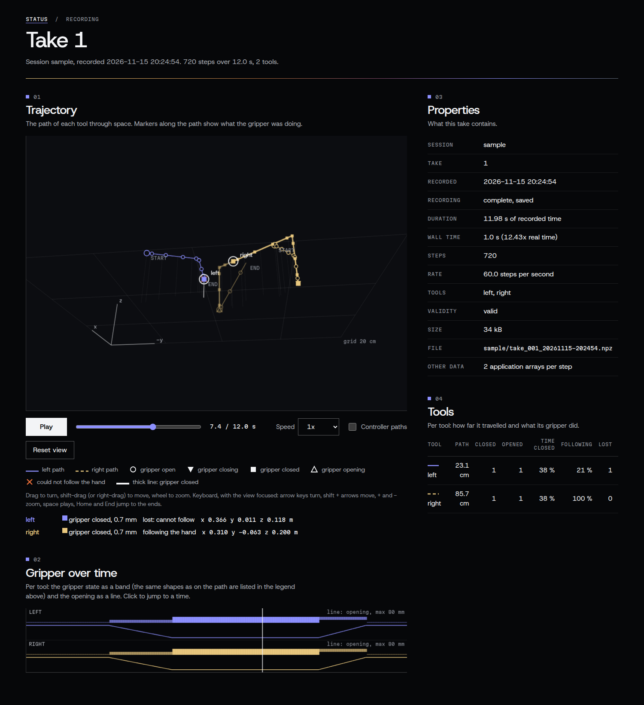

Status page and trajectory viewer
StatusPage serves a local web page from your server process: who is connected and how, how fast the simulator and the network run, where the latency goes, and the recorded takes. Each take opens in a trajectory viewer. Python standard library only, live by server-sent events, static HTML with no build step, nothing loaded from the internet.

Start it #
from quest_teleop import StatusPage, TakeRecorder, TeleopServer
srv = TeleopServer(name="my sim").start()
rec = TakeRecorder(tools=("left", "right"), max_opening=0.08)
page = StatusPage(srv, recordings_dir=rec.root, extra=my_status, title="My sim").start()
print(page.url) # http://localhost:8800
...
page.stop()| Argument | Default | Meaning |
|---|---|---|
server | the TeleopServer to watch | |
port | 8800 | HTTP port |
host | 127.0.0.1 | address to bind; only this computer can open the page. Use 0.0.0.0 to let other machines open it (it has no login) |
extra | None | a function returning your application's part of the page (below), called once per period |
title | "Teleoperation" | page title |
period | 1.0 | seconds between updates |
history_s | 600 | seconds of history kept for the charts |
recordings_dir | None | a TakeRecorder folder: its takes are listed and open in the trajectory viewer |
The demo starts it on port 8800 (quest-teleop-demo --status-port 0 turns it off).
What it shows #
- State strip: server, headset, session and recording state, each as a shape and words.
- Connection: headset connected and worn, USB or Wi-Fi, device, address, display rate, packet loss each way, scene scale, other clients.
- Session: whatever your
extracallback reports. - Speeds: simulator real-time factor and steps per second, network Mbit/s and packets per second, headset frames per second; charts over the last 10 minutes.
- Latency: total (median and 95th percentile) and its parts: network + pickup, wait for the next simulator step, simulator step, server processing, display refresh. The step and processing parts come from
server.note_timing(Latency measurement). - Recordings: every take in
recordings_dir, newest first, with duration, steps, size and validity.
Your part of the page: extra #
extra() returns a dict; every key is optional:
def my_status():
return {
"session": {"name": "run-01",
"state": "running", # running | paused | recording | idle
"state_text": "Session running",
"rows": [["Scene", "pick and place"], ["Left tool", "idle"]]},
"sim": {"rtf": 0.98, # simulator speed / real time
"steps_per_s": 59.0,
"contact_n": 2.5}, # contact force [N], drawn on the speed chart
# "recordings": {...} # only to replace the table built from recordings_dir
}Trajectory viewer #

Selecting a take on the status page opens /take?file=...:
- each tool's path in 3D: drag to turn, shift-drag or right-drag to move, wheel to zoom; with the view focused, arrow keys turn, shift + arrows move,
+and-zoom, space plays, Home and End jump to the ends; - play and scrub through time, at several speeds, optionally with the controller paths;
- the gripper state marked along the path by shape as well as colour: open, closing, closed, opening, could not follow;
- the gripper opening over time per tool;
- the take's properties and a per-tool summary (path length, closes, opens, share of time closed and following, lost events).
Endpoints #
All on the page's own address (default http://localhost:8800):
| Path | Returns |
|---|---|
/ | the status page |
/api/state | the newest sample as JSON: server.monitor() plus your extra() and the recordings table |
/api/history | the samples of the last history_s seconds (JSON list) |
/events | the live stream (server-sent events, one sample per period) |
/take?file=<session>/<take>.npz | the trajectory viewer |
/api/take?file=<session>/<take>.npz | that take's paths and properties as JSON |
/fonts/* | the page's two typefaces |
/api/state is handy for scripts and agents: curl -s http://localhost:8800/api/state.
Accessibility #
Both pages use real text and tables, shapes plus words for every state, visible keyboard focus, keyboard control of the 3D view, and text equivalents for the charts.
Next: Protocol.